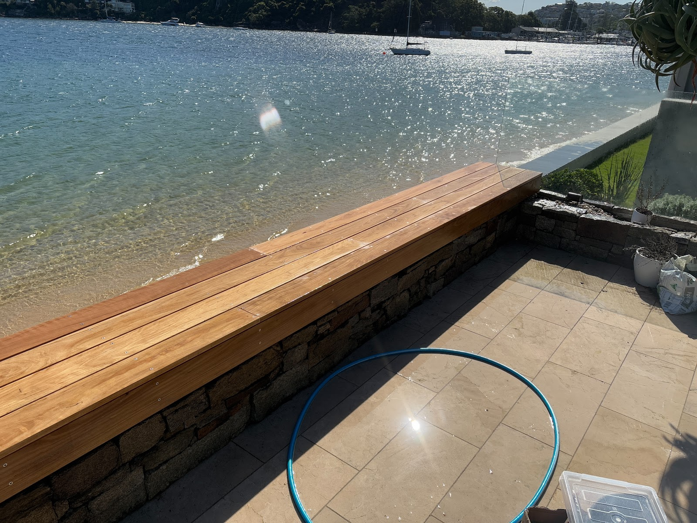
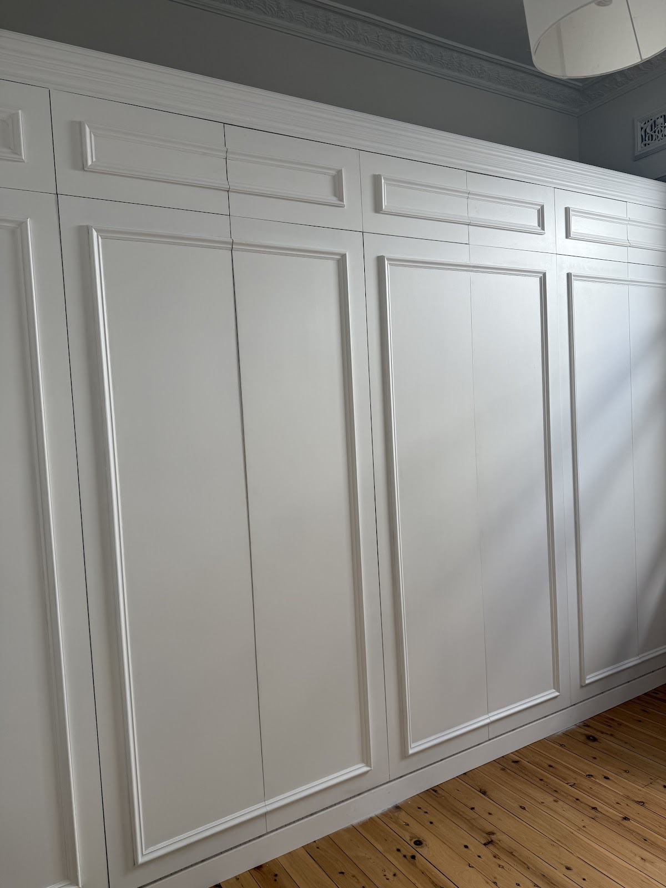
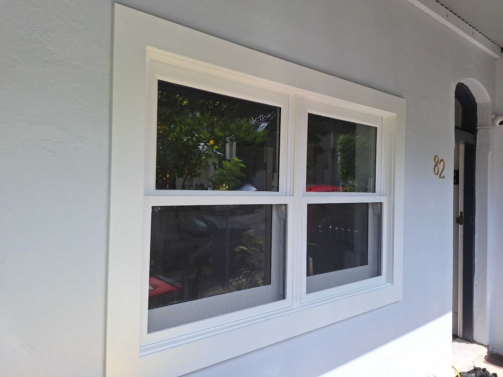
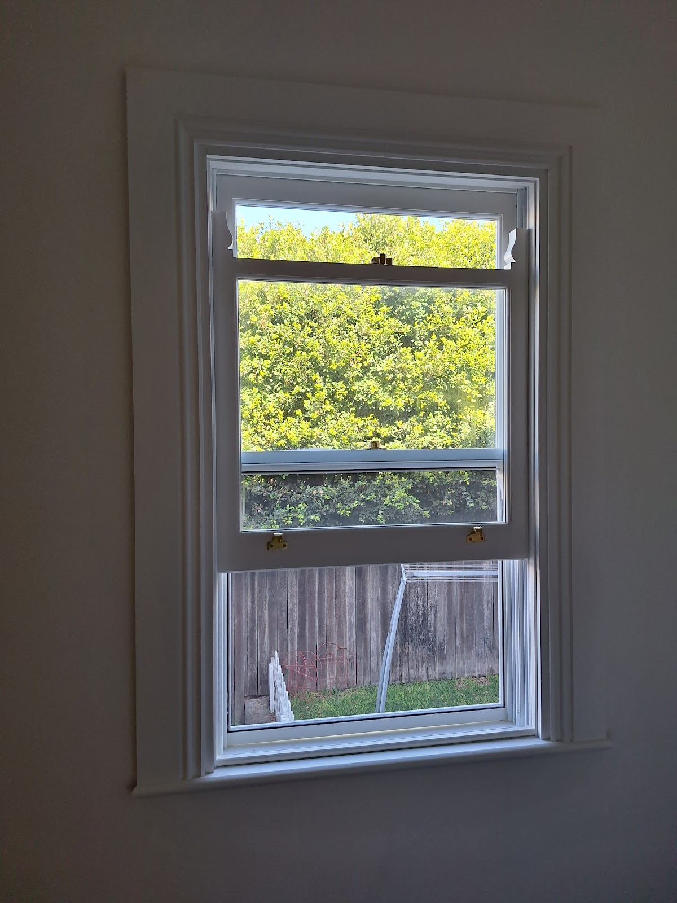

Carpentry & heritage restoration
Decks, pergolas, custom joinery and heritage restoration — made by hand in Balmain with the kind of attention to detail the old cottages deserve.
Blue Gums Carpentry
Blue Gums is Jonah — a Balmain carpenter trusted with everything from harbourside timber decks to the fiddly heritage repairs that keep the Inner West's old workers' cottages standing.
It's honest, tidy, on-time work. Architrave profiles matched to the original. Pergolas that become "the talk of the street." Decks finished exactly the way you pictured them — with a few good suggestions along the way.
Five jobs, five five-star reviews. Not many tradesmen work like this anymore.

What Jonah builds
Hardwood decks, bench seats and screens built for the weather and the view — clean lines, tight joins, finished to last.
Pergolas and outdoor structures that change how a space feels — versatile, sturdy, and quietly well-made.
Doorframes, sash windows, architraves and panelling — repaired and matched to the original profiles and paint. Bluegums Heritage work.
Wainscoting, panelled walls and bespoke built-ins made to fit the room and the era — no off-the-shelf shortcuts.
Recent work



5.0 ★ · Google reviews
"Jonah built a deck for me, and it turned out better than I could've hoped for. His attention to detail and craftsmanship are next level. Easy to deal with, listened to what I wanted, and gave great suggestions. If you need quality carpentry, he's your guy!"
"Thank you Jonah! Our pergola structure is the talk of That Vintage Emporium. So versatile — it helps us change the look & feel of the store easily. The whole package: problem-solving, hard work, expertise & craftsmanship."
"We engaged Blue Gums to repair a rotting doorframe on our old workers cottage in Balmain. Jonah was meticulous about matching architrave profiles and paint colours, and conscientious about finishing despite rain delays. Highly recommend for heritage work."
"Very highly recommended! Jonah is honest, friendly, takes pride in his work and does a fantastic job — all while being great value. There are not many tradesmen like him these days."
"Could not recommend Jonah highly enough. His work is impeccable. He is punctual, efficient and clean — a very skilled carpenter with amazing attention to detail."
Every review, five stars. Every job, done properly.
Get a quote
Decks, pergolas, heritage repairs or custom joinery across Balmain and the Inner West — call for an honest quote, no obligation.
0434 982 408